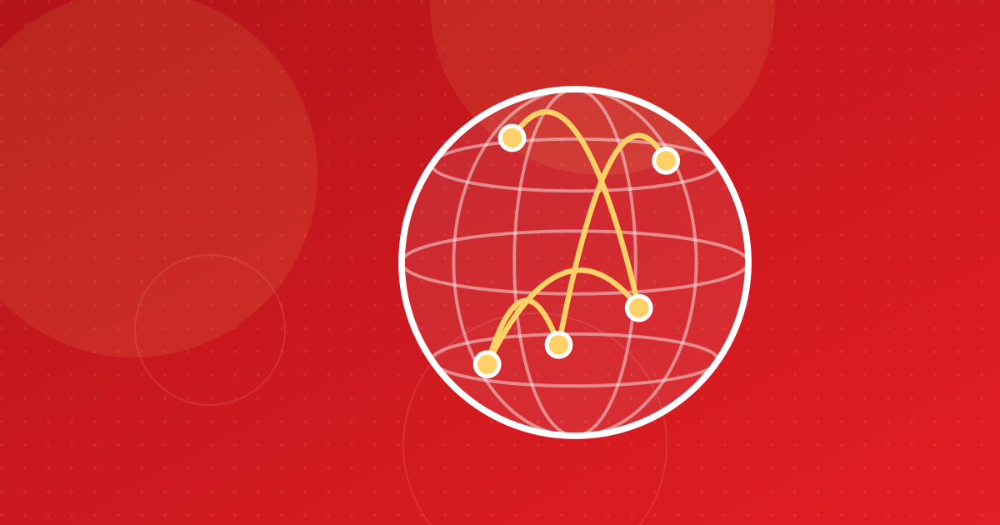

البطاقة التكنولوجية الدولية في تونس: السقف والاستعمالات وطريقة الحصول عليها
البطاقة التكنولوجية الدولية هي الوسيلة التي يدفع بها أغلب التونسيين ثمن البرمجيات والاستضافة والإشهار والدورات عبر الإنترنت في الخارج. من يمكنه الحصول عليها، وكم يمكن إنفاقه، وما المسموح والممنوع، والبدائل.

أبرز النقاط
- تتيح البطاقة التكنولوجية الدولية للمقيمين في تونس الدفع للمواقع الأجنبية بالعملة الأجنبية، في حدود منحة سنوية يحددها البنك المركزي.
- السقف 1 000 دينار سنويًا للفرد، و10 000 دينار للشركة، و100 000 دينار للشركة الحاصلة على علامة مؤسسة ناشئة.
- يشترط في الأفراد أن يكونوا تونسيين مقيمين ومتحصلين على الباكالوريا على الأقل؛ ويُقدَّم الطلب في البنك أو البريد مع بطاقة التعريف والشهادة وتصريح على الشرف.
- تغطي الاستضافة والإشهار والبرمجيات والاشتراكات والتكوين عن بعد، لا شراء السلع ولا مصاريف الإقامة ولا الرهان.
الدينار التونسي غير قابل للتحويل، لذلك لا تعمل البطاقة البنكية العادية إلا داخل تونس. ولدفع ثمن اسم نطاق أو خادم سحابي أو رخصة برمجية أو دورة تكوينية عبر الإنترنت في الخارج، يحتاج المقيمون إلى بطاقة خاصة مموّلة بالعملة الأجنبية: البطاقة التكنولوجية الدولية (carte technologique internationale). يشرح هذا الدليل السقف، والشروط، والاستعمالات المسموح بها، والبدائل. وهو يعتمد على صفحات منتجات BIAT وATB وبنك تونس، وعلى دليلين مفصّلين نُشرا في 2026 من Wassim Gatri وNovaHoster.
ما هي البطاقة التكنولوجية الدولية؟
هي بطاقة دفع يُصدرها بنك تونسي أو البريد التونسي، تُموَّل بالدينار، ويحوّلها المُصدر إلى عملة أجنبية عند الدفع لموقع أجنبي. أحدث البنك المركزي التونسي هذه الآلية سنة 2015، وضبط قواعدها الحالية بالمنشور 2016-09، ثم وسّعها لتشمل المؤسسات الناشئة بالمنشور 2019-02. والمبلغ السنوي منحة بالعملة الأجنبية: بعد استهلاكه، يجب انتظار السنة الإدارية الموالية.
ما هو سقف البطاقة التكنولوجية؟
| صاحب البطاقة | السقف السنوي | ملاحظات |
|---|---|---|
| فرد (تونسي مقيم) | 1 000 دينار | منحة واحدة لكل شخص في كل البنوك |
| شركة | 10 000 دينار | بعض البنوك تقصرها على قطاعات الإعلامية والاتصالات والتعليم والاستشارة والبحث |
| شركة حاصلة على علامة مؤسسة ناشئة | 100 000 دينار | في إطار قانون المؤسسات الناشئة |
تسري المنحة على السنة الإدارية حسب BIAT، ولا يُرحَّل الرصيد غير المستعمل. وبسعر يقارب 3,36 دنانير لليورو (انظر سعر اليورو مقابل الدينار اليوم)، تساوي 1 000 دينار نحو 300 يورو سنويًا، أي قرابة 25 يورو شهريًا: ما يكفي لاستضافة وبعض الاشتراكات، لا لمجموعة كاملة من الأدوات المهنية. وقد أُعلن عن رفع سقف الأفراد مرات عدة منذ 2022، لكن لم يغيّره أي منشور جديد حتى الآن.
المصدر: صفحات منتجات البنوك (BIAT وATB وبنك تونس) وBusiness News (أوت 2026)
عرض البيانات
| البيان | القيمة |
|---|---|
| البطاقة التكنولوجية، فرد | 1 000 دينار |
| المنحة السياحية | 6 000 دينار |
| البطاقة التكنولوجية، شركة | 10 000 دينار |
من يمكنه الحصول عليها؟
بالنسبة إلى الأفراد، تشترط البنوك الجنسية التونسية والإقامة في تونس والحصول على الباكالوريا أو شهادة معادلة على الأقل، حسب ATB والدليلين الصادرين في 2026. وعمليًا، تُسلَّم البطاقة للراشدين. وتطلبها الشركات باسمها، وعلى المؤسسات الناشئة تقديم قرار إسناد العلامة.
كيف تقدّم الطلب؟
- اختر المُصدر. تقدّمها أغلب البنوك (BIAT وATB وبنك تونس وBTK وSTB وبنك الزيتونة وغيرها)، وكذلك البريد التونسي الذي يشترط حسابًا جاريًا بريديًا نشطًا.
- جهّز الوثائق: بطاقة التعريف الوطنية، ونسخة مطابقة للأصل من الباكالوريا أو شهادة أعلى، وتصريح على الشرف يُمضى عادة في الفرع. وتضيف الشركات مضمون السجل التجاري والنظام الأساسي. ويطلب ATB فتح حساب مخصص أولًا.
- موّل البطاقة بالدينار في الفرع أو عبر البنك عن بعد. ويطبّق المُصدر سعر صرفه الخاص عند الدفع.
- احتفظ بالفواتير. قد يُطلب منك تبرير عمليات الدفع، وإعارة البطاقة أو بيعها يخالف تصريحك على الشرف.
تختلف المعاليم حسب المُصدر وكثيرًا ما لا تكون منشورة. ويذكر الدليلان معلومًا سنويًا بـ20 دينارًا في بنك الزيتونة وتجديدًا بـ3 دنانير في البريد؛ اسأل بنكك عن معلوم الإصدار وعمولة الصرف قبل الاختيار.
ما الذي يمكن دفعه بها؟
يحدد منشور البنك المركزي الخدمات المسموح بها، ومنها:
- استضافة المواقع والتطبيقات وأسماء النطاقات والخدمات السحابية؛
- الإشهار عبر الإنترنت (محركات البحث وشبكات التواصل الاجتماعي)؛
- رخص البرمجيات وأدوات تطوير التطبيقات؛
- الاشتراكات في مواقع أجنبية، بما فيها منصات العمل الحر وقواعد البيانات والمواقع التعليمية؛
- التكوين عن بعد والدورات عبر الإنترنت.
ممنوع: شراء السلع، ومصاريف الإقامة، والرهان، والمواقع المحظورة. وتصفّي بعض الجهات المُصدرة العمليات حسب صنف التاجر، لذلك قد تُرفض عملية تبدو مسموحًا بها. ولا ترد معاليم الدراسة الجامعية ومعاليم التأشيرة صراحة في القائمة؛ تثبّت من بنكك.
هل يمكن استعمال PayPal في تونس؟
بشكل محدود جدًا. تمنع قواعد الصرف المقيمين من امتلاك أرصدة بالعملة الأجنبية وسحبها بحرية، لذلك لا يُعدّ PayPal وسيلة عملية ليتلقى التونسيون أموالهم، كما أن منحة البطاقة التكنولوجية أصغر من حاجة أغلب المستقلين. ويقترح مشروع قانون قدّمه أحد عشر نائبًا، نقلته Business News في أوت 2026، الاعتراف بالعمل الحر وفتح النفاذ إلى منصات الدفع الدولية، لكنه يتضمن أيضًا اقتطاعًا بنسبة 15% على السحوبات وسقفًا شهريًا بـ5 000 دولار. ولم تتم المصادقة عليه.
لتلقي الأموال من الخارج، اطّلع على دليلنا حول استقبال الأموال في تونس. وقد يخفّف إصلاح مجلة الصرف هذه القواعد مستقبلًا، لكنه ما يزال أمام البرلمان.
أي خيار يناسبك؟
- طالب أو مطوّر مستقل: تغطي بطاقة الـ1 000 دينار الاستضافة واسم النطاق وبعض الاشتراكات الصغيرة. والبريد هو غالبًا الخيار الأبسط إن كان لديك حساب جار بريدي.
- مستقل أو وكالة: قدّم الطلب باسم شركة للحصول على منحة 10 000 دينار، بعد التثبّت من قائمة القطاعات لدى بنكك.
- مؤسسة ناشئة: احصل على علامة مؤسسة ناشئة لتتمتع بـ100 000 دينار سنويًا وبحساب بالعملة الأجنبية.
- السفر: المنحة السياحية (6 000 دينار سنويًا) مخصصة للسفر إلى الخارج، لا للاشتراكات عبر الإنترنت.
أسئلة شائعة
ما هو سقف البطاقة التكنولوجية الدولية؟
1 000 دينار في السنة الإدارية للفرد، و10 000 دينار للشركة، و100 000 دينار للشركة الحاصلة على علامة مؤسسة ناشئة. ولا يُرحَّل الرصيد غير المستعمل إلى السنة الموالية.
من يمكنه الحصول على البطاقة التكنولوجية الدولية في تونس؟
التونسيون المقيمون المتحصلون على الباكالوريا أو شهادة معادلة على الأقل، والشركات المقيمة. ويُقدَّم الطلب في البنك أو البريد مع بطاقة التعريف ونسخة مطابقة للأصل من الشهادة وتصريح على الشرف.
هل يمكن شراء منتجات من مواقع أجنبية بالبطاقة التكنولوجية؟
لا. البطاقة مخصصة للخدمات مثل الاستضافة والإشهار والبرمجيات والاشتراكات والتكوين عن بعد. ويُمنع شراء السلع ومصاريف الإقامة والرهان.
هل يُصدر البريد التونسي البطاقة التكنولوجية؟
نعم. يُصدر البريد التونسي البطاقة التكنولوجية الدولية لأصحاب الحسابات الجارية البريدية النشطة، ويمكن التصرف فيها عبر e-dinar.
المصادر
- Carte Technologique — BIAT
- Carte Technologique ATB — Arab Tunisian Bank
- Carte Technologique Internationale — Banque de Tunisie
- Carte technologique Tunisie : plafond, Poste, banques 2026 — Wassim Gatri (Oct. 2026)
- Payer un service étranger depuis la Tunisie : guide 2026 — NovaHoster (Sept. 2026)
- Freelances : la loi qui veut ouvrir PayPal et prélève 15 % — Business News (10 Aug. 2026)
هذا المقال لأغراض إعلامية فقط ولا يُعدّ استشارة قانونية أو مالية أو استثمارية. الأرقام مؤرخة وموثّقة المصادر؛ يُرجى الرجوع إلى أحدث المنشورات الرسمية قبل اتخاذ أي قرار.